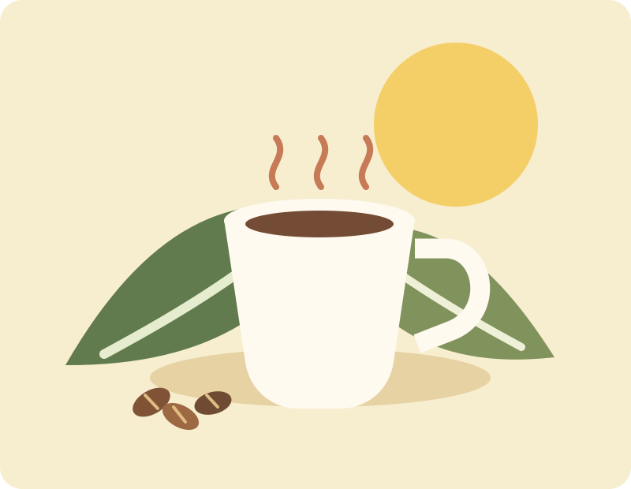

認真挑豆
用心認識咖啡豆的風味，讓選擇回到每一杯的品質。
ABOUT RAINBOW
我們想分享好喝的咖啡，也想讓每一次停留都輕鬆自在。
02 / OUR STORY
OUR STORY
彩虹咖啡的故事，從一個簡單的想法開始：希望每個人都能在熟悉的咖啡香裡，找到適合自己的片刻。
我們重視咖啡的風味，也在意空間帶給人的感受。無論你是想探索不同咖啡豆，或只是想找個地方歇一歇，都歡迎來坐坐。
以上為示範文案，品牌成立時間與實際故事待確認。
WHAT WE BELIEVE
用心認識咖啡豆的風味，讓選擇回到每一杯的品質。
照顧烘焙的每個環節，呈現咖啡本身的香氣與口感。
以輕鬆親切的步調，讓咖啡時光成為日常裡舒服的一站。